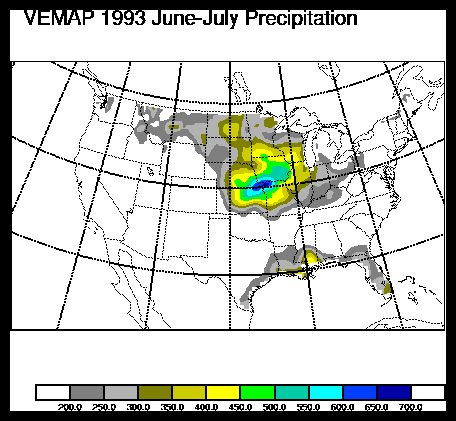
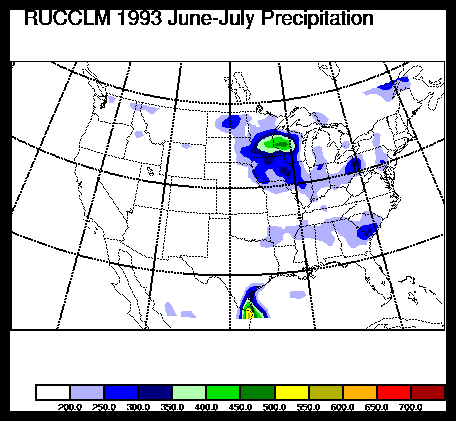
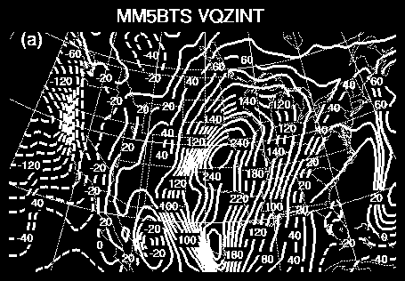
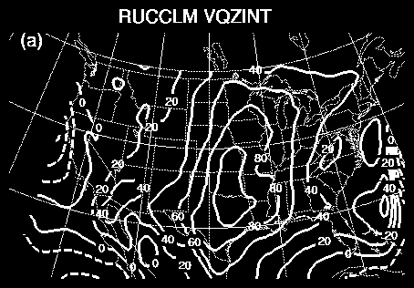

Because LLJs are fewer in the RUC output, the northward water vapor transport is much less than in other PIRCS models. The images below show the time- averaged northward transport for one version of MM5 and the RUC, respectively.

A second difference is found in the timing of precipitation. Below are plots of the daily cycle for the mean precipitation. The observed cycle has a distinct nocturnal maximum, while the RUC has an afternoon maximum. Other models showed similar behavior, even models that predicted a high frequency of LLJs. So, the challenge isn't just predicting LLJs, it is also predicting the correct coupling of LLJs and precipitation.